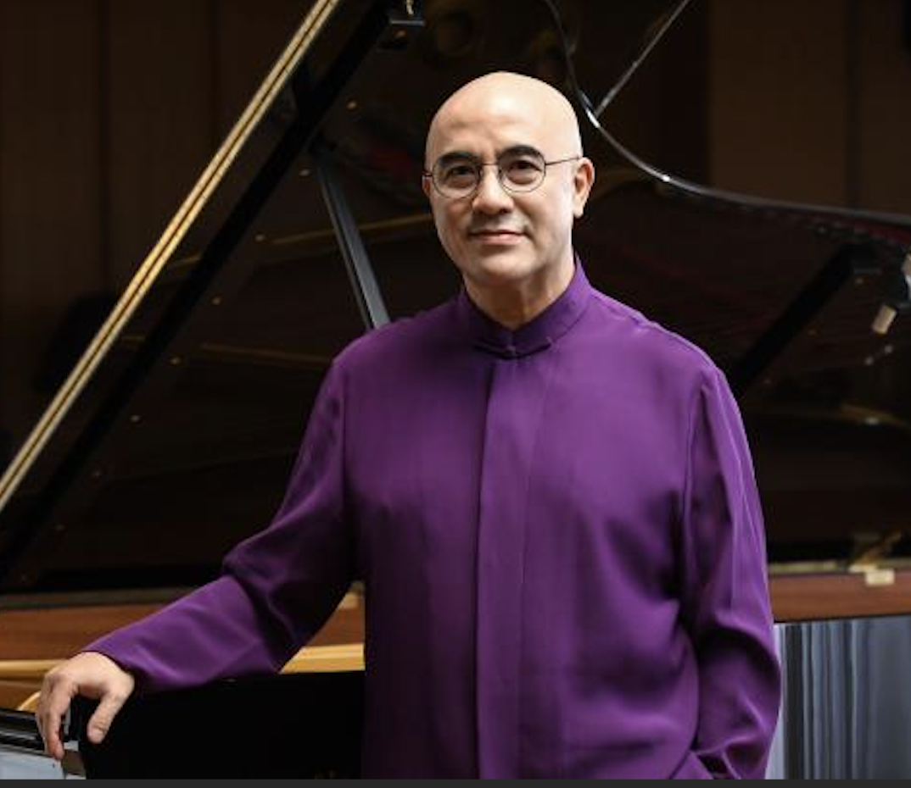
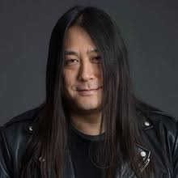
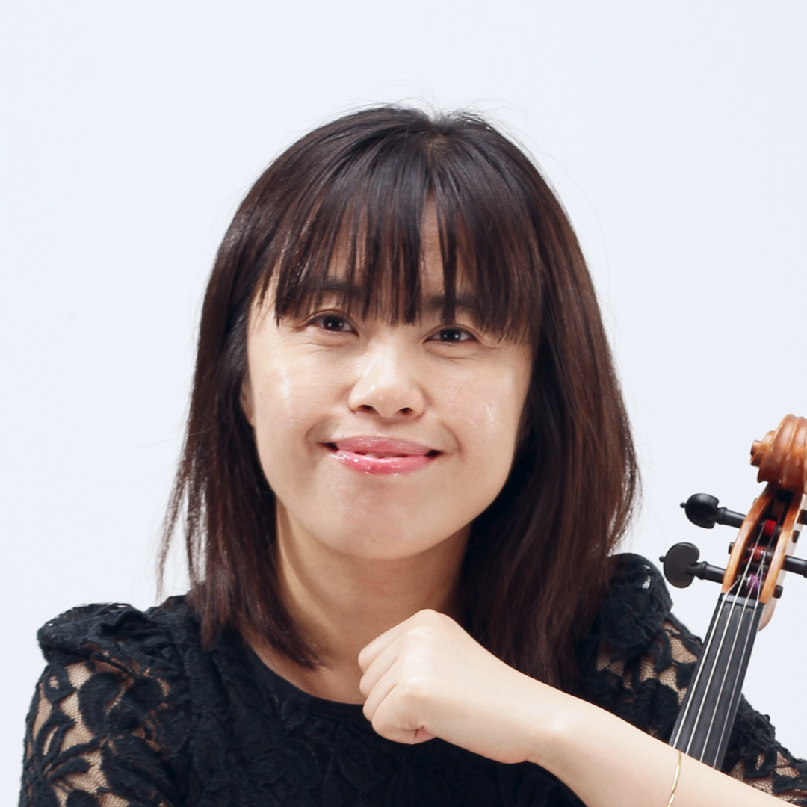
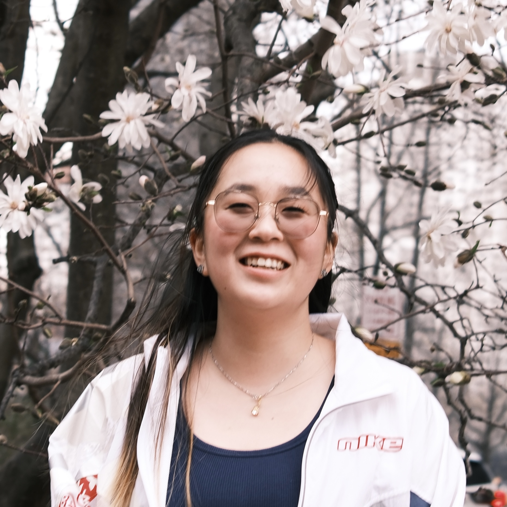
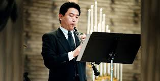

About
Our Artists contribute to the NYU Shanghai Orchestra through their expertise, mentorship, and collaboration, fostering artistic growth and cross-cultural engagement with our students and community.
Professors At-Large

Xiangdong Kong
Performing Arts Professor
Kong Xiangdong is one of China’s most celebrated pianists, renowned for his virtuosity and charismatic stage presence. Born in Shanghai, he rose to international prominence after winning prizes at the Tchaikovsky International Piano Competition and other prestigious contests. Kong has performed with leading orchestras worldwide, blending classical repertoire with innovative interpretations that showcase both technical mastery and emotional depth. Beyond performance, he is also dedicated to music education and cultural exchange, inspiring younger generations to embrace piano and classical music. With his artistry and passion, Kong has become a cultural ambassador for China’s flourishing music scene.

Kaiser Guo
Social Sciences Professor
Kaiser Kuo is a writer, musician, and commentator best known as a leading voice on Chinese society, culture, and technology. Born in the United States to Chinese parents, he co-founded the iconic Chinese heavy metal band Tang Dynasty in the late 1980s, blending Western rock with traditional Chinese elements. Later, he became Director of International Communications at Baidu, shaping the company’s global outreach. Today, he is widely recognized as co-founder and host of the acclaimed Sinica Podcast, which brings in-depth conversations on China to a global audience. Through music, media, and dialogue, Kuo bridges cultures with insight and creativity.
Artistic Partners
Individuals

Shiwen Liu
Professor of Strings
Violinist and violist, Liu joined the Shanghai Broadcasting Symphony Orchestra in 1999 and became the principal viola since 2001, the youngest principal of the time. In 2010, she was invited to serve as the guest principal of the Hamburg Symphony Orchestra in Germany, and she is active on stage as a chamber music musician.
Liu has toured with the orchestra in North America, Europe and Asia. In recent years, she devoted herself to music education (violin and viola) and served as a judge of music competitions. Many of her students won awards in solo or ensemble competitions. She is currently the artistic director of the Shanghai Little Baroque Chamber Orchestra, associate professor of NYU Shanghai and guest professor of Duke Kunshan University in Shanghai.

Monica Luo
Violist
Monica is a senior majoring in Business and Finance with a concentration in Business Analytics, and minors in Economics, Chinese Language, Global China Studies, and Social Sciences. On campus, you will often find her in the West Building, where she works with Professor Yue Cheng to coordinate rehearsals and events for the school’s performing arts program, and performs as a violist in the NYU Shanghai Orchestra. With experience in client-facing roles, banking, and quantitative finance across China and the United States, Monica is passionate about helping students leverage their academic experiences to explore and prepare for meaningful career paths.

Yue Cheng
Conductor
Yue Cheng is the Area Head of Performing Arts and an Associate Arts Professor of Music at NYU Shanghai. Cheng is a graduate of the University of Texas at Austin and the Hartt School of Music.
Cheng has performed in the Czech Republic, Germany, Italy, Switzerland, U.S., Japan, China and Brazil. He has been featured in “Sessione Siena la Musica e Arte”(Italy), and the Southern Bohemian Music Festival (Germany, Czech Republic). His recent career highlights include master classes at West Point Academy and NYU Steinhardt. He had been a member of the Sao Paulo State Symphony Orchestra and a regular guest member of Tokyo Metropolitan Symphony Orchestra and Hamburg (Germany) Symphoniker. Currently, Cheng is the principle oboe of the Shanghai Philharmonic Orchestra.
Cheng has won numerous competitions and prizes, including second prize in International Broadcast Competition for Young Musicians in Prague, second place in Kingsville International Music Competition, and first prize in the Mcgauhey-Yeager Competition and the Emerson String Quartet Competition.
Institutions